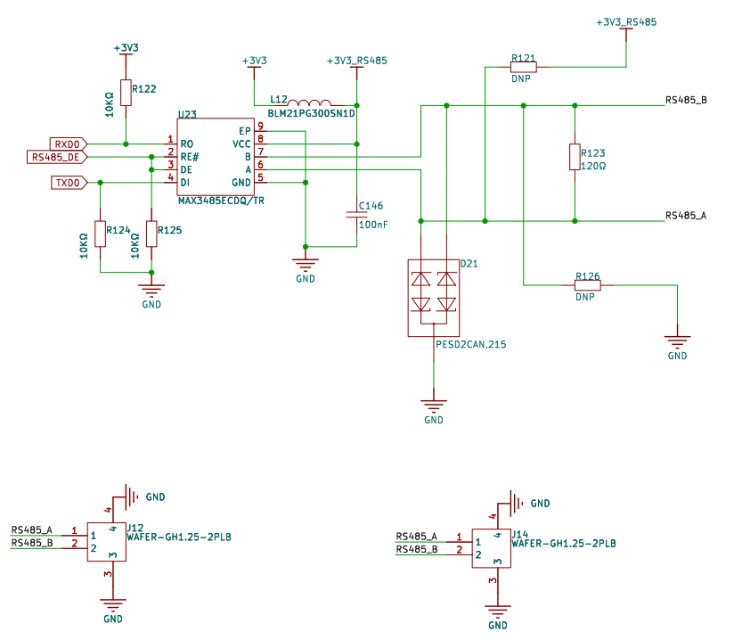
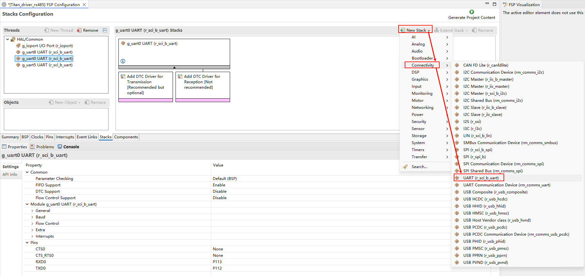
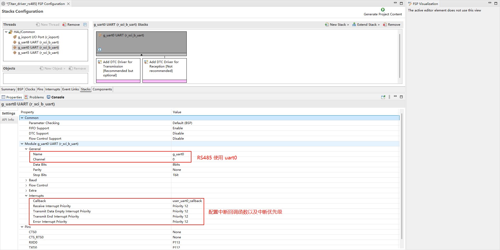
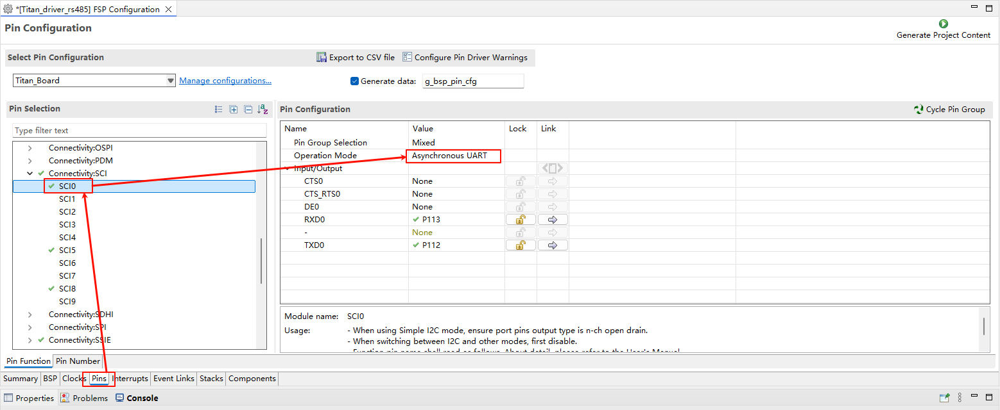
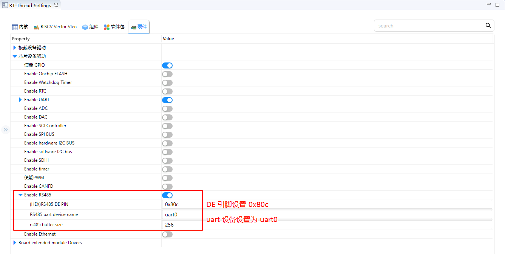
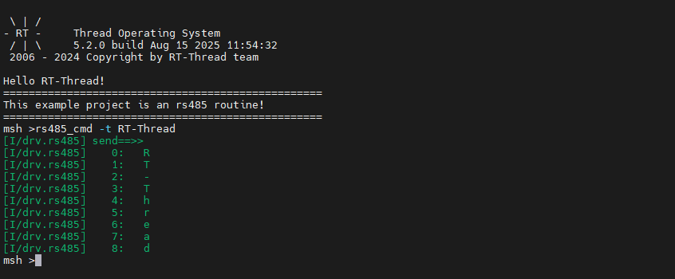
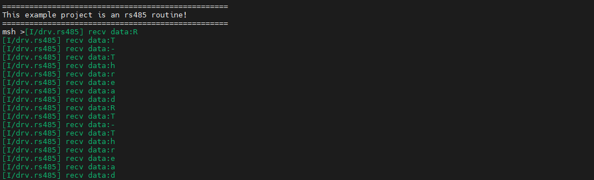

RS485 驱动例程
中文 | English
简介
本示例演示了如何在 Titan Board 上使用 RA8 系列 MCU 的 UART 模块实现 RS485 半双工通信，并基于 RT-Thread 串口驱动框架进行数据收发。通过该示例，用户可以熟悉 RA8 UART 外设的配置方法、RS485 通信模式的设置，以及在 RT-Thread 下的应用流程。
RS-485 简介
1. 概述
RS-485（也称 TIA/EIA-485）是一种差分信号串行通信标准，用于工业控制、楼宇自动化和远距离数据传输。它是 RS-232 的增强版，可以支持更长距离和多节点通信。
主要特点：
差分传输：使用 A/B 两条线传输信号，提高抗干扰能力
多点通信：单总线可挂载 多达 32 个驱动器和 32 个接收器（扩展器件可更多）
长距离传输：标准可达 1200 米，速率与距离成反比
半双工或全双工：可灵活配置，常见工业总线协议（Modbus RTU）采用半双工
2. 物理层特性
特性 |
描述 |
|---|---|
信号类型 |
差分信号（A/B 两线） |
驱动电压 |
±1.5 V 至 ±5 V |
接收器阈值 |
≥ ±200 mV |
总线最大节点数 |
32 个驱动器 + 32 个接收器（标准） |
总线长度 |
最高可达 1200 m（速率低可更长） |
终端电阻 |
120 Ω，匹配总线阻抗，减少反射 |
差分信号原理：
A/B 两条线同时传输电流方向相反的信号
接收器测量 V_AB = V_A - V_B
即使有共模干扰，差分电压仍可保持正确逻辑
3. 通信模式
半双工（Half-Duplex）
总线单方向通信
通过控制发送/接收使能实现
常用于 Modbus RTU 等工业协议
全双工（Full-Duplex）
使用两对差分线（A/B + A’/B’）同时收发
提高通信效率
对 PCB 布线要求更高
点对点和多点通信
点对点：两节点通信，简单可靠
多点（多驱动器/多接收器）：需总线仲裁，避免冲突
4. 信号特性
逻辑电平：
逻辑 “1”（标记电平）：A < B
逻辑 “0”（空闲电平）：A > B
抗干扰能力
差分信号可抑制共模干扰
常用于工业环境中的长距离传输
波特率与距离：
波特率
最大传输距离
9600 bps
1200 m
115200 bps
100 m
波特率越高，传输距离越短
5. 优势与限制
优势：
抗干扰能力强
支持长距离和多节点
总线成本低，布线简单
限制：
半双工总线通信需软件或硬件管理冲突
高速通信距离受限
需要终端电阻匹配
RA8 系列 UART 模块概述
RA8 系列 MCU 内置高性能 UART 外设，支持多种通信模式和波特率，能够满足 RS485 半双工通信需求。
1. UART 总体特性
通信模式：标准 UART 异步串行通信
数据位长度：5~9 位可选
停止位：1、1.5、2 位可选
奇偶校验：支持无、偶、奇校验
波特率：支持 300 bps ~ 12 Mbps，部分型号可更高
FIFO 支持：发送/接收 FIFO 缓冲，减轻 CPU 负担
DMA 支持：TX/RX 可通过 DMA 提高数据吞吐
中断事件：传输完成、中断触发、FIFO 阀值、错误检测（帧错误、溢出、奇偶校验错误）
2. RS485 相关功能
RA8 UART 模块对 RS485 支持如下：
DE（Driver Enable）自动控制
当发送数据时自动拉高 DE
发送完成后自动拉低 DE
半双工模式
单线收发器，通过方向控制实现收发切换
地址检测功能（可选）
支持多机通讯的地址匹配
3. UART 架构与工作原理
发送/接收 FIFO
提供独立的 TX/RX 缓冲区
支持 FIFO 阈值中断，提高连续收发效率
波特率生成器
根据 PCLK 和分频寄存器生成所需波特率
支持标准波特率和非标准波特率
中断与事件处理
TX 空中断：发送缓冲区空
RX 满中断：接收缓冲区满
错误中断：帧错误、溢出、奇偶校验错误
发送完成中断：可用于 RS485 DE 自动控制
RT-Thread UART v2 驱动框架
RT-Thread UART v2（Universal Asynchronous Receiver/Transmitter）框架 是 RT-Thread 设备驱动层提供的统一接口，用于管理各类 MCU 的串口通信模块。UART v2 相较于旧版 UART 框架，进一步标准化了接口定义，增强了事件回调和中断机制支持，使应用层能够以统一的方式实现串口通信功能。
1. 设备模型
在 RT-Thread 中，UART 被作为 设备对象（struct rt_device 的子类，类型为 RT_Device_Class_Char）进行管理。开发者无需直接操作底层寄存器，只需通过标准接口即可完成串口设备的初始化、配置、收发以及回调注册等操作。
2. 操作接口
应用程序通过 RT-Thread 提供的 I/O 设备管理接口来访问 UART 硬件，相关接口如下所示：
查找串口设备
rt_device_t rt_device_find(const char* name);
打开串口设备
rt_err_t rt_device_open(rt_device_t dev, rt_uint16_t oflags);
控制串口设备
通过控制接口，应用程序可以对串口进行配置，如波特率、数据位、校验位、停止位、缓冲区大小等参数。控制函数如下：
rt_err_t rt_device_control(rt_device_t dev, rt_uint8_t cmd, void* arg);
发送数据
rt_size_t rt_device_write(rt_device_t dev, rt_off_t pos, const void* buffer, rt_size_t size);
设置发送完成回调函数
rt_err_t rt_device_set_tx_complete(rt_device_t dev, rt_err_t (*tx_done)(rt_device_t dev, void* buffer));
设置接收回调函数
rt_err_t rt_device_set_rx_indicate(rt_device_t dev, rt_err_t (*rx_ind)(rt_device_t dev, rt_size_t size));
接收数据
rt_size_t rt_device_read(rt_device_t dev, rt_off_t pos, void* buffer, rt_size_t size);
关闭串口设备
rt_err_t rt_device_close(rt_device_t dev);
常用控制命令如下（通过 rt_device_control() 调用）：
#define RT_DEVICE_CTRL_CONFIG (0x10) /* 配置串口参数 */
#define RT_DEVICE_CTRL_SET_INT (0x11) /* 使能中断 */
#define RT_DEVICE_CTRL_CLR_INT (0x12) /* 关闭中断 */
#define RT_DEVICE_CTRL_CUSTOM_CMD (0x13) /* 自定义控制命令 */
3. 框架特点
接口统一：串口设备的读写、控制、回调等操作统一封装为标准接口。
事件回调机制：支持接收与发送完成的回调函数，提高异步通信能力。
可配置参数丰富：支持灵活配置波特率、校验位、数据位和停止位。
中断与 DMA 支持：可根据驱动实现选择中断模式或 DMA 模式进行收发。
跨平台移植性强：应用层代码可在不同 MCU 平台间无缝复用。
硬件说明

FSP 配置
打开 FSP 工具，新建
r_sci_b_uartstack：

配置
r_sci_b_uartstack：

配置
r_sci_b_uart引脚：

RT-Thread Settings 配置
使能并配置 RS485。

工程示例说明
#define RS485_OUT rt_pin_write((rt_base_t)RS485_DE_PIN, PIN_HIGH)
#define RS485_IN rt_pin_write((rt_base_t)RS485_DE_PIN, PIN_LOW)
static rt_device_t rs485_serial = RT_NULL;
static struct rt_semaphore rs485_rx_sem;
static struct rt_ringbuffer rs485_rx_rb;
static rt_uint8_t rs485_rx_buffer[RS485_RX_BUFFER_SIZE];
/* uart receive data callback function */
static rt_err_t rs485_input(rt_device_t dev, rt_size_t size)
{
if (size > 0)
{
rt_uint8_t ch;
while (rt_device_read(dev, 0, &ch, 1) == 1)
{
rt_ringbuffer_put_force(&rs485_rx_rb, &ch, 1);
}
rt_sem_release(&rs485_rx_sem);
}
return RT_EOK;
}
/* send data */
int rs485_send_data(const void *tbuf, rt_uint16_t t_len)
{
RT_ASSERT(tbuf != RT_NULL);
/* change rs485 mode to transmit */
RS485_OUT;
/* send data */
rt_size_t sent = rt_device_write(rs485_serial, 0, tbuf, t_len);
if (sent != t_len)
{
/* Transmission failed, switch back to receive mode */
RS485_IN;
return -RT_ERROR;
}
/* Note: We don't switch back to receive mode here -
that will be done in the tx_complete callback (rs485_output) */
LOG_I("send==>>");
for (int i = 0; i < t_len; i++)
{
LOG_I(" %d: %c ", i, ((rt_uint8_t *)tbuf)[i]);
}
RS485_IN;
return RT_EOK;
}
static void rs485_thread_entry(void *parameter)
{
rt_uint8_t ch;
rt_size_t length;
while (1)
{
/* Wait for data */
rt_sem_take(&rs485_rx_sem, RT_WAITING_FOREVER);
/* Process all available data in the ring buffer */
while (length = rt_ringbuffer_get(&rs485_rx_rb, &ch, 1))
{
if (length == 1)
{
LOG_I("recv data:%c", ch);
}
}
}
}
int rs485_init(void)
{
/* Initialize ring buffer */
rt_ringbuffer_init(&rs485_rx_rb, rs485_rx_buffer, RS485_RX_BUFFER_SIZE);
/* find uart device */
rs485_serial = rt_device_find(RS485_UART_DEVICE_NAME);
if (!rs485_serial)
{
LOG_E("find %s failed!", RS485_UART_DEVICE_NAME);
return -RT_ERROR;
}
/* Open device in interrupt mode with DMA support if available */
rt_device_open(rs485_serial, RT_DEVICE_FLAG_INT_RX | RT_DEVICE_FLAG_DMA_RX);
/* set receive data callback function */
rt_device_set_rx_indicate(rs485_serial, rs485_input);
/* Initialize RTS pin */
rt_pin_mode((rt_base_t)RS485_DE_PIN, PIN_MODE_OUTPUT);
RS485_IN;
/* Initialize semaphore */
rt_sem_init(&rs485_rx_sem, "rs485_rx_sem", 0, RT_IPC_FLAG_FIFO);
rt_thread_t thread = rt_thread_create("rs485", rs485_thread_entry, RT_NULL,
1024, 25, 10);
if (thread != RT_NULL)
{
rt_thread_startup(thread);
}
else
{
return -RT_ERROR;
}
return RT_EOK;
}
INIT_DEVICE_EXPORT(rs485_init);
编译&下载
RT-Thread Studio：在RT-Thread Studio 的包管理器中下载 Titan Board 资源包，然后创建新工程，执行编译。
编译完成后，将开发板的 USB-DBG 接口与PC 机连接，然后将固件下载至开发板。
运行效果
在终端中输入 rs485_cmd -t RT-Thread 命令发送 “RT-Thread” 字符串。

将 Titan Board 的 RS485 接口与另一块开发板的 RS485 接口连接，使用另一块开发板不断发送数据，终端会输出 Titan Board 接收到的数据。
